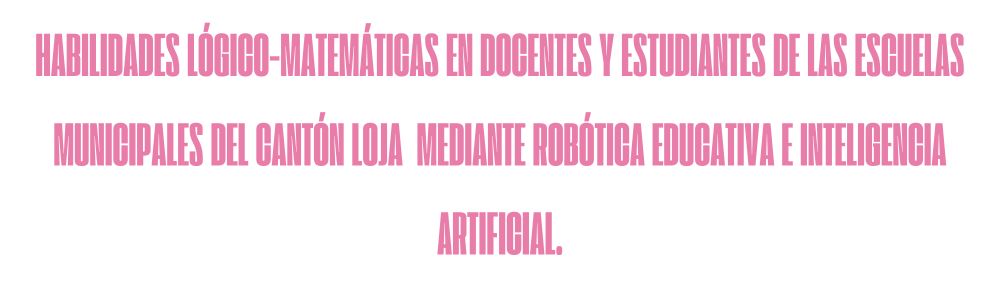

📖Sobre el proyecto
El presente Recurso tiene como propósito ofrecer un marco completo para el desarrollo de habilidades lógico-matemáticas a través de la robótica educativa y la inteligencia artificial. Este recurso busca fortalecer competencias fundamentales en los estudiantes, como el pensamiento crítico, la creatividad y la capacidad para resolver problemas, mediante actividades teóricas y prácticas que integran distintos enfoques interdisciplinarios.

✍Título del proyecto

👩🏼💻Participantes
Estudiantes del Octavo ciclo de la Carrera de Pedagogía de las Ciencias Experimentales Informática, de la Universidad Nacional de Loja.
📝Objetivos

Objetivo General:
Contribuir al desarrollo de habilidades de razonamiento lógico-matemático en docentes
y estudiantes de las escuelas municipales del cantón Loja mediante la implementación de
programas educativos que integren robótica educativa e inteligencia artificial,
promoviendo la resolución de problemas reales y el uso de tecnologías emergentes.
Objetivo específico:
Comprender y aplicar los principios básicos de la programación orientada a la robótica, desarrollando algoritmos y estructuras lógicas.
🧠Desarrollo de competencias

Desarrollar una variedad de competencias al trabajar en proyectos de robótica educativa, incluyendo habilidades tecnológicas, fundamentos de la programación, habilidades matemáticas, habilidades de colaboración, habilidades de pensamiento crítico y habilidades de innovación creativa.
👩🏼🔬Conocimientos previos:

- Manejo básico del computador: Conocer el uso del teclado y ratón, encendido y apagado del equipo, apertura de programas y uso de carpetas.
- Lógica matemática básica: Comprender operaciones simples, secuencias numéricas, identificación de ángulos y nociones espaciales.
- Trabajo colaborativo: Saber trabajar en equipo, compartir materiales, seguir instrucciones grupales y respetar turnos y roles.
- Comprensión lectora básica: Entender instrucciones sencillas, tanto orales como escritas, necesarias para seguir guías paso a paso.